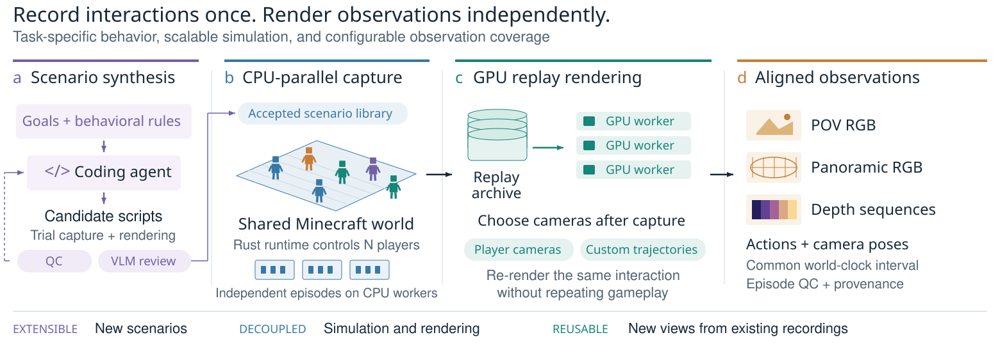

PAWA jointly predicts each player's point-of-view (POV) video and a world-stabilized panorama of the surroundings, conditioned on the actions of every interacting player. Each clip shows 12 s at 20 fps: ground truth on the left, the 4-step distilled model on the right. Within each half, the two players' POVs sit above their panoramas.
Episodes A–E are the 10th, 30th, 50th, 70th and 90th percentiles of PAWA (Distilled) POV LPIPS among the 30 held-out two-player interaction episodes, chosen by rank before visual inspection, so E is a hard case. Frame 0 is the given condition; the remaining 239 frames are forecasts from actions alone. Future positions, visibility and images are not provided.
TL;DR
A multiplayer world model must predict how the independent actions of several players change a shared environment, including changes outside a player's current field of view. A POV video observes such changes only once they enter the camera, whereas panoramic video records the surroundings in every direction. No existing Minecraft dataset pairs POV and panoramic video of interacting players with their action controls. PAWA provides:
- A dataset and collection pipeline. Each player's POV video is paired with a world-stabilized panorama and aligned actions. Capture runs on CPUs without graphics clients and scales beyond 64 simultaneous players. Recorded gameplay can be re-rendered under new observation configurations.
- A dual-tower world model. A POV tower and a panorama tower exchange features wherever the two streams observe the same world direction. Viewing rays in a shared world frame align the projections by construction.
- A quadratic-phase rotary player encoding. The identity pool grows from m+1 to m2 codes at the same embedding dimension, with closed-form correlations.
On 30 two-player interaction episodes, PAWA outperforms state-of-the-art multiplayer world models in POV prediction quality and also produces high-fidelity panoramic predictions.
Panoramic multiplayer dataset
Existing multiplayer Minecraft data comes from screen capture of live game clients. That yields only the displayed perspective view, and every player needs a graphics client. Our pipeline records programmable interactions on CPUs and renders the saved replays offline on GPUs. The same interaction can then yield different observations, including POV or panoramic projections, relative depth, and custom camera trajectories, without repeating the gameplay.

Large sessions, observed from anywhere
Counts are connected, recorded participants. Terrain and other characters can occlude players. These recordings show collection capability, not model generation: the model is trained and evaluated on 2–16 players.
Paired observations of the same event
Dual-tower panoramic world model
Given initial images in both projections, PAWA predicts future POV and panoramic video for all N players, conditioned on every player's actions:

Ray-aligned cross-tower exchange
The same scene direction lands at different image coordinates in a rectilinear POV frame and an equirectangular panorama. Because the POV camera turns with the head, this correspondence changes every frame. Each token therefore carries its world-frame viewing ray as a rotary phase:
Tokens that look in the same direction have zero relative phase, whatever their pixel positions. This provides directional correspondence between the co-located cameras. It does not impose pixel agreement.
Quadratic-phase player codes
Regular-simplex rotary codes admit only m+1 equidistant identities in m phase planes. Following mutually unbiased bases, for an odd prime m:
This gives m2 codes with closed-form correlations. Our implementation supports 120 player identities, an order of magnitude beyond simplex codes at equal dimension. This establishes codebook capacity, not generation quality at every code count.
Training proceeds in stages: the towers are first adapted and joined, then the model is made causal (PAWA (Causal), 35 sampling steps) and distilled (PAWA (Distilled), 4 steps). Both variants are shown below. Fewer sampling steps are not a measured wall-clock speedup.
Comparison with multiplayer world models
Each clip plays every model on the same episode, synchronized frame by frame. External models receive POV only and have no panoramic output, so the last tile shows the ground-truth panorama above PAWA's prediction.
The median case and the largest-regression case are the paper's qualitative figures. They are the lower median and the maximum of the per-episode change in POV LPIPS from distillation. A–E are the LPIPS percentiles used above. Every model runs natively to 12 s. Tiles keep each model's native field of view and aspect ratio: Solaris and MultiWorld use their own preprocessing, action interfaces and resolutions, and MultiWorld is a cross-domain adaptation. These are descriptive comparisons, not matched-input evaluations.
| Model | Stream | FVD↓ | FID↓ | LPIPS↓ | PSNR↑ | SSIM↑ |
|---|---|---|---|---|---|---|
| Gamma-World (Bidirectional) | POV | 267.1 | 56.63 | 0.567 | 13.08 | 0.478 |
| Gamma-World (Causal) | POV | 306.7 | 52.00 | 0.606 | 12.46 | 0.451 |
| Gamma-World (Distilled) | POV | 279.7 | 58.36 | 0.584 | 11.83 | 0.431 |
| Solaris | POV | 614.9 | 77.31 | 0.634 | 10.42 | 0.447 |
| MultiWorld | POV | 771.2 | 186.06 | 0.667 | 11.76 | 0.395 |
| PAWA (Causal) | POV | 120.1 | 30.80 | 0.421 | 16.86 | 0.562 |
| PAWA (Distilled) | POV | 138.1 | 28.40 | 0.465 | 15.38 | 0.516 |
| PAWA (Causal) | PANO | 88.0 | 26.53 | 0.223 | 20.41 | 0.643 |
| PAWA (Distilled) | PANO | 98.1 | 28.26 | 0.243 | 19.77 | 0.617 |
Four, eight and sixteen players
The same model covers larger populations. Each clip shows every player's POV and panorama, folded into a grid in player order.
For each population, the lower-median episode by PAWA (Distilled) POV LPIPS, out of 12. The four-player clip also shows Gamma-World (Distilled). All tested populations occur in training, so these rollouts do not demonstrate generalization to unseen player counts. Visible errors in geometry, characters and occlusion remain.
| Players | Model | Stream | FVD↓ | FID↓ | LPIPS↓ | PSNR↑ | SSIM↑ |
|---|---|---|---|---|---|---|---|
| 4 | Gamma-World (Bidirectional) | POV | 752.3 | 142.95 | 0.633 | 13.34 | 0.487 |
| Gamma-World (Causal) | POV | 373.0 | 57.02 | 0.587 | 13.06 | 0.465 | |
| Gamma-World (Distilled) | POV | 323.6 | 56.65 | 0.577 | 12.39 | 0.440 | |
| PAWA (Causal) | POV | 138.0 | 33.49 | 0.427 | 16.41 | 0.550 | |
| PAWA (Distilled) | POV | 167.3 | 33.86 | 0.481 | 15.08 | 0.506 | |
| PAWA (Causal) | PANO | 161.9 | 32.79 | 0.254 | 19.08 | 0.630 | |
| PAWA (Distilled) | PANO | 194.1 | 32.94 | 0.264 | 18.67 | 0.619 | |
| 8 | PAWA (Causal) | POV | 111.5 | 32.32 | 0.458 | 15.06 | 0.536 |
| PAWA (Distilled) | POV | 141.3 | 28.90 | 0.517 | 13.71 | 0.494 | |
| PAWA (Causal) | PANO | 127.9 | 27.42 | 0.294 | 17.31 | 0.591 | |
| PAWA (Distilled) | PANO | 135.6 | 29.52 | 0.301 | 16.72 | 0.577 | |
| 16 | PAWA (Causal) | POV | 92.2 | 28.39 | 0.467 | 15.50 | 0.554 |
| PAWA (Distilled) | POV | 116.7 | 23.96 | 0.520 | 14.15 | 0.511 | |
| PAWA (Causal) | PANO | 93.6 | 23.65 | 0.333 | 16.87 | 0.570 | |
| PAWA (Distilled) | PANO | 92.5 | 20.95 | 0.333 | 16.66 | 0.567 |
Solaris and MultiWorld have no pairwise adaptation to more than two players and are not included. The paper also reports a 4-step causal control.
Does the POV tower use the panorama?
We disable all seven cross-tower exchange sites of PAWA (Distilled) at inference time. The checkpoint, recorded noise, seed and sampler stay the same, and nothing is retrained. POV prediction degrades clearly. The panorama changes only slightly.
| Stream | Cross-tower sites | FVD↓ | FID↓ | LPIPS↓ | PSNR↑ | SSIM↑ |
|---|---|---|---|---|---|---|
| POV | Enabled | 138.1 | 28.40 | 0.4648 | 15.382 | 0.5157 |
| POV | Disabled | 179.0 | 37.71 | 0.5096 | 14.749 | 0.5094 |
| Panorama | Enabled | 98.1 | 28.26 | 0.2425 | 19.765 | 0.6172 |
| Panorama | Disabled | 104.0 | 28.42 | 0.2444 | 19.645 | 0.6142 |
This measures how much the trained model relies on the exchange pathway. It is not the outcome of training without it.
Scope of the evidence
- All evaluated player counts (2, 4, 8, 16) occur in training, and episode ancestry holdout is not fully established. We claim neither new-world nor unseen-population generalization.
- PAWA receives panorama as well as POV conditions. External baselines differ in inputs, action interfaces, resolution, preprocessing and seeds.
- FID and FVD are pooled over 12–30 episodes per tier. They support relative comparison under the same conditions, not absolute quality levels.
- Ray alignment gives directional correspondence between co-located cameras, not pixel agreement or correspondence across translated cameras.
- Collector demonstrations with 64 and 128 players show capture capability. They do not show model quality at those populations.
BibTeX
@inproceedings{anonymous2027pawa,
title = {{PAWA}: Panoramic Action-conditioned World Modeling for Multiple Agents},
author = {Anonymous},
booktitle = {Submitted to the International Conference on Learning Representations},
year = {2027},
note = {Under review}
}